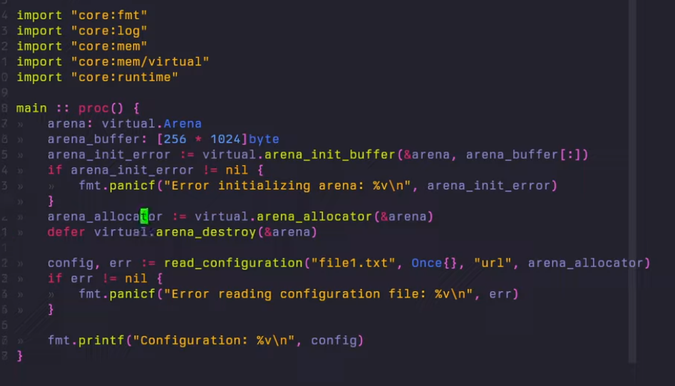

Allocator :: struct {
procedure: Allocator_Proc,
data: rawptr,
}
-
Allocators, Linear Allocators, Fragmentation, Stack Allocators - Nic Barker .
-
To improve the fragmentation from Linear Allocators, the memory region is divided by blocks.
-
Memory that is all together, with sequentially increasing addresses as Contiguous .
-
Why use allocators
-
In C and C++ memory models, allocations of objects in memory are typically treated individually with a generic allocator (The
mallocprocedure). Which in some scenarios can lead to poor cache utilization, slowdowns on individual objects' memory management and growing complexity of the code needing to keep track of the pointers and their lifetimes. -
Using different kinds of allocators for different purposes can solve these problems. The allocators are typically optimized for specific use-cases and can potentially simplify the memory management code.
-
For example, in the context of making a game, having an Arena allocator could simplify allocations of any temporary memory, because the programmer doesn't have to keep track of which objects need to be freed every time they are allocated, because at the end of every frame the whole allocator is reset to its initial state and all objects are freed at once.
-
The allocators have different kinds of restrictions on object lifetimes, sizes, alignment and can be a significant gain, if used properly. Odin supports allocators on a language level.
-
Operations such as
new,freeanddeleteby default will usecontext.allocator, which can be overridden by the user. When an override happens all called procedures will inherit the new context and use the same allocator. -
We will define one concept to simplify the description of some allocator-related procedures, which is ownership. If the memory was allocated via a specific allocator, that allocator is said to be the owner of that memory region. To note, unlike Rust, in Odin the memory ownership model is not strict.
Notes
-
There are some allocator requirements for
maps; see the Maps (Hash Maps) section. -
"Arenas and Dynamic Allocators together can sometimes be inefficient".
-
I didn't fully understand the concept.
Implicit Allocator Usage
For
context.allocator
-
runtime.default_allocator()-
Only used if the
context.temp_allocatoris not manually initialized.
-
-
runtime.heap_allocator().-
Used a lot around
os2andos. -
TEMP_ALLOCATOR_GUARD-
if the
context.temp_allocatoris not manually initialized.
-
-
os2._env: [dynamic]stringin theos2/env_linux.odin. -
os2.get_args()/os2.delete_args() -
os2.file_allocator()-
os2.walkers -
etc, a LOT of places inside the
os2lib.
-
-
-
os.args-
Uses it implicitly.
-
This is fixed by using
os2, which still uses a heap allocator implicitly, but at least is not thecontext.allocator, but theos2.heap_allocator.-
It's technically the same thing, but at least this doesn't break
-default-to-panic-allocator.
-
-
For
context.temp_allocator
-
Conclusion :
-
context.temp_allocator/runtime.DEFAULT_TEMP_ALLOCATOR_TEMP_GUARDis used implicitly A LOT inside thecorelibraries.
-
-
base:-
Nothing uses it. Just definition.
-
-
core:-
compress/common-
Has todo s to remove it.
-
-
encoding/json-
Uses implicitly.
-
-
encoding/xml-
Uses implicitly.
-
-
flags-
Uses implicitly.
-
-
fmt-
Uses implicitly.
-
-
image/jpeg-
Uses implicitly.
-
-
image/netbpm.-
Uses implicitly with guard.
-
-
image/png.-
Uses implicitly with guard.
-
-
net-
Uses implicitly.
-
-
odin/parser-
Uses implicitly.
-
-
os-
Uses implicitly with guard.
-
-
os/os2-
Uses implicitly with guard.
-
-
path/filepath-
Uses implicitly with guard.
-
-
path/slashpath-
Uses implicitly with guard.
-
-
sys/windows-
Uses implicitly.
-
-
sys/darwin-
Uses implicitly.
-
-
sys/info-
Uses implicitly.
-
-
sys/orca-
Uses implicitly.
-
-
testing-
Uses implicitly.
-
-
encoding/cbor-
It's overridable in the parameters.
-
cbor/tags.odin, wtf?-
I'm seeing
deletewithcontext.temp_allocator...
-
-
The library is really messy.
-
-
container.-
It's overridable in the parameters.
-
-
container/kmac-
It's overridable in the parameters.
-
-
dynlib-
It's overridable in the parameters.
-
-
thread-
Deletes the
context.temp_allocatorif set.
-
-
Default Allocators
-
For
context.allocator:when ODIN_DEFAULT_TO_NIL_ALLOCATOR { default_allocator_proc :: nil_allocator_proc default_allocator :: nil_allocator } else when ODIN_DEFAULT_TO_PANIC_ALLOCATOR { default_allocator_proc :: panic_allocator_proc default_allocator :: panic_allocator } else when ODIN_OS != .Orca && (ODIN_ARCH == .wasm32 || ODIN_ARCH == .wasm64p32) { default_allocator :: default_wasm_allocator default_allocator_proc :: wasm_allocator_proc } else { default_allocator :: heap_allocator default_allocator_proc :: heap_allocator_proc } -
For
context.temp_allocator:when NO_DEFAULT_TEMP_ALLOCATOR { default_temp_allocator_proc :: nil_allocator_proc } else { default_temp_allocator_proc :: proc(allocator_data: rawptr, mode: Allocator_Mode, size, alignment: int, old_memory: rawptr, old_size: int, loc := #caller_location) -> (data: []byte, err: Allocator_Error) { s := (^Default_Temp_Allocator)(allocator_data) return arena_allocator_proc(&s.arena, mode, size, alignment, old_memory, old_size, loc) } } -
Both are used here:
__init_context :: proc "contextless" (c: ^Context) {
// etc
c.allocator.procedure = default_allocator_proc
c.allocator.data = nil
c.temp_allocator.procedure = default_temp_allocator_proc
when !NO_DEFAULT_TEMP_ALLOCATOR {
c.temp_allocator.data = &global_default_temp_allocator_data
}
// etc
}
Nil Allocator
-
The
nilallocator returnsnilon every allocation attempt. This type of allocator can be used in scenarios where memory doesn't need to be allocated, but an attempt to allocate memory is not an error.
@(require_results)
nil_allocator :: proc() -> Allocator {
return Allocator{
procedure = nil_allocator_proc,
data = nil,
}
}
nil_allocator_proc :: proc(
allocator_data: rawptr,
mode: Allocator_Mode,
size, alignment: int,
old_memory: rawptr,
old_size: int,
loc := #caller_location,
) -> ([]byte, Allocator_Error) {
return nil, nil
}
Default to Nil
-
Use
-default-to-nil-allocatoras a compilation flag. -
Keep in mind:
-default-to-panic-allocatorcannot be used with-default-to-nil-allocator.
Panic Allocator
-
The panic allocator is a type of allocator that panics on any allocation attempt. This type of allocator can be used in scenarios where memory should not be allocated, and an attempt to allocate memory is an error.
// basically the same as the Nil Allocator, but panics.
Uses
-
To ensure explicit allocators, different from
context.allocator:-
You could set
context.allocatorto aruntime.panic_allocator()so that if anything uses it by accident it'll panic, then pass your allocator around explicitly.
-
Default to Panic
-
Use
-default-to-panic-allocatoras a compilation flag. -
Keep in mind:
-default-to-panic-allocatorcannot be used with-default-to-nil-allocator.
Arena: Backed directly by virtual memory (
vmem.Arena
)
-
Reserving virtual memory does not increase memory usage. It goes up when the dynamic array actually grows into that reserved space.
-
Uses virtual memory directly , whereas the arenas in mem use a
[]byteor[dynamic]bytefor their memory, so they basically still exist inside the heap allocator.
// Create an `Allocator` from the provided `Arena`
@(require_results, no_sanitize_address)
arena_allocator :: proc(arena: ^Arena) -> mem.Allocator {
return mem.Allocator{arena_allocator_proc, arena}
}
kind
.Static
-
Contains a single
Memory_Blockallocated with virtual memory.
kind
.Growing
-
Is a linked list of
Memory_Blocks allocated with virtual memory. -
Allows for
vmem.Arena_Tempwhich can callvmem.arena_growing_free_last_memory_block, shrinking itself, from my understanding.
kind
.Buffer
.Buffer
-
I'm not using this one, seems redundant. Just use
mem.Arena. -
Demo :
-

.
-
-
Discussion :
-
Caio:
-
Is the arena buffer from
mem/virtualactually virtual? I'm confused as the buffer is externally passed toarena_init_buffer, and for what I was able to understand, the memory is never committed. -
I mean, isn't a
mem.Arenamore efficient, as it avoids unnecessary checks for something that will never be committed? They both seem to do the same thing, whilemem/virtualbuffer uses the concept ofMemory_Blocksas an abstraction, but it doesn't seem to matter in this case
-
-
Barinzaya:
-
bufferis one mode, but in that one you provide the memory. The other modes (the defaultgrowingas well asstatic) do their own allocation, indeed using virtual memory. -
I guess it's just a matter of flexibility. It already has a mode to check anyway, and a lot of the logic is the same, so I guess it's a "might as well"--though I do find
virtual.Arenato be trying to do a bit too much myself -
In the bigger picture, using the same code for both could prove beneficial in terms of instruction cache, even if the code is less specialized
-
If you're actually using it in both modes, that is.
-
-
Bootstrapping
// Ability to bootstrap allocate a struct with an arena within the struct itself using the growing variant strategy.
arena_growing_bootstrap_new :: proc{
arena_growing_bootstrap_new_by_offset,
arena_growing_bootstrap_new_by_name,
}
// Ability to bootstrap allocate a struct with an arena within the struct itself using the static variant strategy.
arena_static_bootstrap_new :: proc{
arena_static_bootstrap_new_by_offset,
arena_static_bootstrap_new_by_name,
}
Alloc from Memory Block
-
Allocates memory from the provided arena.
@(require_results, no_sanitize_address, private)
arena_alloc_unguarded :: proc(arena: ^Arena, size: uint, alignment: uint, loc := #caller_location) -> (data: []byte, err: Allocator_Error) {
size := size
if size == 0 {
return nil, nil
}
switch arena.kind {
case .Growing:
prev_used := 0 if arena.curr_block == nil else arena.curr_block.used
data, err = alloc_from_memory_block(arena.curr_block, size, alignment, default_commit_size=arena.default_commit_size)
if err == .Out_Of_Memory {
if arena.minimum_block_size == 0 {
arena.minimum_block_size = DEFAULT_ARENA_GROWING_MINIMUM_BLOCK_SIZE
arena.minimum_block_size = mem.align_forward_uint(arena.minimum_block_size, DEFAULT_PAGE_SIZE)
}
if arena.default_commit_size == 0 {
arena.default_commit_size = min(DEFAULT_ARENA_GROWING_COMMIT_SIZE, arena.minimum_block_size)
arena.default_commit_size = mem.align_forward_uint(arena.default_commit_size, DEFAULT_PAGE_SIZE)
}
if arena.default_commit_size != 0 {
arena.default_commit_size, arena.minimum_block_size =
min(arena.default_commit_size, arena.minimum_block_size),
max(arena.default_commit_size, arena.minimum_block_size)
}
needed := mem.align_forward_uint(size, alignment)
needed = max(needed, arena.default_commit_size)
block_size := max(needed, arena.minimum_block_size)
new_block := memory_block_alloc(needed, block_size, alignment, {}) or_return
new_block.prev = arena.curr_block
arena.curr_block = new_block
arena.total_reserved += new_block.reserved
prev_used = 0
data, err = alloc_from_memory_block(arena.curr_block, size, alignment, default_commit_size=arena.default_commit_size)
}
arena.total_used += arena.curr_block.used - prev_used
case .Static:
if arena.curr_block == nil {
if arena.minimum_block_size == 0 {
arena.minimum_block_size = DEFAULT_ARENA_STATIC_RESERVE_SIZE
}
arena_init_static(arena, reserved=arena.minimum_block_size, commit_size=DEFAULT_ARENA_STATIC_COMMIT_SIZE) or_return
}
if arena.curr_block == nil {
return nil, .Out_Of_Memory
}
data, err = alloc_from_memory_block(arena.curr_block, size, alignment, default_commit_size=arena.default_commit_size)
arena.total_used = arena.curr_block.used
case .Buffer:
if arena.curr_block == nil {
return nil, .Out_Of_Memory
}
data, err = alloc_from_memory_block(arena.curr_block, size, alignment, default_commit_size=0)
arena.total_used = arena.curr_block.used
}
// sanitizer.address_unpoison(data)
return
}
@(require_results, no_sanitize_address)
alloc_from_memory_block :: proc(block: ^Memory_Block, min_size, alignment: uint, default_commit_size: uint = 0) -> (data: []byte, err: Allocator_Error) {
@(no_sanitize_address)
calc_alignment_offset :: proc "contextless" (block: ^Memory_Block, alignment: uintptr) -> uint {
alignment_offset := uint(0)
ptr := uintptr(block.base[block.used:])
mask := alignment-1
if ptr & mask != 0 {
alignment_offset = uint(alignment - (ptr & mask))
}
return alignment_offset
}
@(no_sanitize_address)
do_commit_if_necessary :: proc(block: ^Memory_Block, size: uint, default_commit_size: uint) -> (err: Allocator_Error) {
if block.committed - block.used < size {
pmblock := (^Platform_Memory_Block)(block)
base_offset := uint(uintptr(pmblock.block.base) - uintptr(pmblock))
// NOTE(bill): [Heuristic] grow the commit size larger than needed
// TODO(bill): determine a better heuristic for this behaviour
extra_size := max(size, block.committed>>1)
platform_total_commit := base_offset + block.used + extra_size
platform_total_commit = align_formula(platform_total_commit, DEFAULT_PAGE_SIZE)
platform_total_commit = min(max(platform_total_commit, default_commit_size), pmblock.reserved)
assert(pmblock.committed <= pmblock.reserved)
assert(pmblock.committed < platform_total_commit)
platform_memory_commit(pmblock, platform_total_commit) or_return
pmblock.committed = platform_total_commit
block.committed = pmblock.committed - base_offset
}
return
}
if block == nil {
return nil, .Out_Of_Memory
}
alignment_offset := calc_alignment_offset(block, uintptr(alignment))
size, size_ok := safe_add(min_size, alignment_offset)
if !size_ok {
err = .Out_Of_Memory
return
}
if to_be_used, ok := safe_add(block.used, size); !ok || to_be_used > block.reserved {
err = .Out_Of_Memory
return
}
assert(block.committed <= block.reserved)
do_commit_if_necessary(block, size, default_commit_size) or_return
data = block.base[block.used+alignment_offset:][:min_size]
block.used += size
// sanitizer.address_unpoison(data)
return
}
@(require_results, no_sanitize_address)
arena_alloc :: proc(arena: ^Arena, size: uint, alignment: uint, loc := #caller_location) -> (data: []byte, err: Allocator_Error) {
assert(alignment & (alignment-1) == 0, "non-power of two alignment", loc)
size := size
if size == 0 {
return nil, nil
}
sync.mutex_guard(&arena.mutex)
return arena_alloc_unguarded(arena, size, alignment, loc)
}
@(no_sanitize_address)
arena_allocator_proc :: proc(allocator_data: rawptr, mode: mem.Allocator_Mode,
size, alignment: int,
old_memory: rawptr, old_size: int,
location := #caller_location) -> (data: []byte, err: Allocator_Error) {
switch mode {
case .Resize, .Resize_Non_Zeroed:
// etc
_ = alloc_from_memory_block(block, new_end - old_end, 1, default_commit_size=arena.default_commit_size) or_return
// etc
new_memory := arena_alloc_unguarded(arena, size, alignment, location) or_return
}
return
}
Memory Block Alloc
// Linux
_commit :: proc "contextless" (data: rawptr, size: uint) -> Allocator_Error {
errno := linux.mprotect(data, size, {.READ, .WRITE})
if errno == .EINVAL {
return .Invalid_Pointer
} else if errno == .ENOMEM {
return .Out_Of_Memory
}
return nil
}
// Windows
@(no_sanitize_address)
_commit :: proc "contextless" (data: rawptr, size: uint) -> Allocator_Error {
result := VirtualAlloc(data, size, MEM_COMMIT, PAGE_READWRITE)
if result == nil {
switch err := GetLastError(); err {
case 0:
return .Invalid_Argument
case ERROR_INVALID_ADDRESS, ERROR_COMMITMENT_LIMIT:
return .Out_Of_Memory
}
return .Out_Of_Memory
}
return nil
}
@(no_sanitize_address)
commit :: proc "contextless" (data: rawptr, size: uint) -> Allocator_Error {
// sanitizer.address_unpoison(data, size)
return _commit(data, size)
}
// Linux
_reserve :: proc "contextless" (size: uint) -> (data: []byte, err: Allocator_Error) {
addr, errno := linux.mmap(0, size, {}, {.PRIVATE, .ANONYMOUS})
if errno == .ENOMEM {
return nil, .Out_Of_Memory
} else if errno == .EINVAL {
return nil, .Invalid_Argument
}
return (cast([^]byte)addr)[:size], nil
}
// Windows
@(no_sanitize_address)
_reserve :: proc "contextless" (size: uint) -> (data: []byte, err: Allocator_Error) {
result := VirtualAlloc(nil, size, MEM_RESERVE, PAGE_READWRITE)
if result == nil {
err = .Out_Of_Memory
return
}
data = ([^]byte)(result)[:size]
return
}
@(require_results, no_sanitize_address)
reserve :: proc "contextless" (size: uint) -> (data: []byte, err: Allocator_Error) {
return _reserve(size)
}
@(no_sanitize_address)
platform_memory_alloc :: proc "contextless" (to_commit, to_reserve: uint) -> (block: ^Platform_Memory_Block, err: Allocator_Error) {
to_commit, to_reserve := to_commit, to_reserve
to_reserve = max(to_commit, to_reserve)
total_to_reserved := max(to_reserve, size_of(Platform_Memory_Block))
to_commit = clamp(to_commit, size_of(Platform_Memory_Block), total_to_reserved)
data := reserve(total_to_reserved) or_return
commit_err := commit(raw_data(data), to_commit)
assert_contextless(commit_err == nil)
block = (^Platform_Memory_Block)(raw_data(data))
block.committed = to_commit
block.reserved = to_reserve
return
}
@(require_results, no_sanitize_address)
memory_block_alloc :: proc(committed, reserved: uint, alignment: uint = 0, flags: Memory_Block_Flags = {}) -> (block: ^Memory_Block, err: Allocator_Error) {
page_size := DEFAULT_PAGE_SIZE
assert(mem.is_power_of_two(uintptr(page_size)))
committed := committed
reserved := reserved
committed = align_formula(committed, page_size)
reserved = align_formula(reserved, page_size)
committed = clamp(committed, 0, reserved)
total_size := reserved + alignment + size_of(Platform_Memory_Block)
base_offset := mem.align_forward_uintptr(size_of(Platform_Memory_Block), max(uintptr(alignment), align_of(Platform_Memory_Block)))
protect_offset := uintptr(0)
do_protection := false
if .Overflow_Protection in flags { // overflow protection
rounded_size := reserved
total_size = uint(rounded_size + 2*page_size)
base_offset = uintptr(page_size + rounded_size - uint(reserved))
protect_offset = uintptr(page_size + rounded_size)
do_protection = true
}
pmblock := platform_memory_alloc(0, total_size) or_return
pmblock.block.base = ([^]byte)(pmblock)[base_offset:]
platform_memory_commit(pmblock, uint(base_offset) + committed) or_return
// Should be zeroed
assert(pmblock.block.used == 0)
assert(pmblock.block.prev == nil)
if do_protection {
protect(([^]byte)(pmblock)[protect_offset:], page_size, Protect_No_Access)
}
pmblock.block.committed = committed
pmblock.block.reserved = reserved
return &pmblock.block, nil
}
@(require_results, no_sanitize_address)
arena_init_growing :: proc(arena: ^Arena, reserved: uint = DEFAULT_ARENA_GROWING_MINIMUM_BLOCK_SIZE) -> (err: Allocator_Error) {
arena.kind = .Growing
arena.curr_block = memory_block_alloc(0, reserved, {}) or_return
arena.total_used = 0
arena.total_reserved = arena.curr_block.reserved
if arena.minimum_block_size == 0 {
arena.minimum_block_size = reserved
}
// sanitizer.address_poison(arena.curr_block.base[:arena.curr_block.committed])
return
}
@(require_results, no_sanitize_address)
arena_init_static :: proc(arena: ^Arena, reserved: uint = DEFAULT_ARENA_STATIC_RESERVE_SIZE, commit_size: uint = DEFAULT_ARENA_STATIC_COMMIT_SIZE) -> (err: Allocator_Error) {
arena.kind = .Static
arena.curr_block = memory_block_alloc(commit_size, reserved, {}) or_return
arena.total_used = 0
arena.total_reserved = arena.curr_block.reserved
// sanitizer.address_poison(arena.curr_block.base[:arena.curr_block.committed])
return
}
Memory Block Dealloc
// Windows (this one seems odd)
@(no_sanitize_address)
_release :: proc "contextless" (data: rawptr, size: uint) {
VirtualFree(data, 0, MEM_RELEASE)
}
// Linux
_release :: proc "contextless" (data: rawptr, size: uint) {
_ = linux.munmap(data, size)
}
@(no_sanitize_address)
release :: proc "contextless" (data: rawptr, size: uint) {
// sanitizer.address_unpoison(data, size)
_release(data, size)
}
@(no_sanitize_address)
platform_memory_free :: proc "contextless" (block: ^Platform_Memory_Block) {
if block != nil {
release(block, block.reserved)
}
}
@(no_sanitize_address)
memory_block_dealloc :: proc(block_to_free: ^Memory_Block) {
if block := (^Platform_Memory_Block)(block_to_free); block != nil {
platform_memory_free(block)
}
}
-
For Growing arenas :
-
vmem.arena_free_all()-
Will shrink the arena to the size of the first Memory Block.
-
Confirmed : This is also shown in the Task Manager, as having much less memory when freeing all.
-
Deallocates all but the first memory block of the arena and resets the allocator's usage to 0.
@(no_sanitize_address) arena_free_all :: proc(arena: ^Arena, loc := #caller_location) { switch arena.kind { case .Growing: sync.mutex_guard(&arena.mutex) // NOTE(bill): Free all but the first memory block (if it exists) for arena.curr_block != nil && arena.curr_block.prev != nil { arena_growing_free_last_memory_block(arena, loc) } // Zero the first block's memory if arena.curr_block != nil { curr_block_used := int(arena.curr_block.used) arena.curr_block.used = 0 // sanitizer.address_unpoison(arena.curr_block.base[:curr_block_used]) mem.zero(arena.curr_block.base, curr_block_used) // sanitizer.address_poison(arena.curr_block.base[:arena.curr_block.committed]) } arena.total_used = 0 case .Static, .Buffer: arena_static_reset_to(arena, 0) } arena.total_used = 0 } -
-
Allocator Procedure
// The allocator procedure used by an `Allocator` produced by `arena_allocator`
@(no_sanitize_address)
arena_allocator_proc :: proc(allocator_data: rawptr, mode: mem.Allocator_Mode,
size, alignment: int,
old_memory: rawptr, old_size: int,
location := #caller_location) -> (data: []byte, err: Allocator_Error) {
arena := (^Arena)(allocator_data)
size, alignment := uint(size), uint(alignment)
old_size := uint(old_size)
switch mode {
case .Alloc, .Alloc_Non_Zeroed:
return arena_alloc(arena, size, alignment, location)
case .Free:
err = .Mode_Not_Implemented
case .Free_All:
arena_free_all(arena, location)
case .Resize, .Resize_Non_Zeroed:
old_data := ([^]byte)(old_memory)
switch {
case old_data == nil:
return arena_alloc(arena, size, alignment, location)
case size == old_size:
// return old memory
data = old_data[:size]
return
case size == 0:
err = .Mode_Not_Implemented
return
}
sync.mutex_guard(&arena.mutex)
if uintptr(old_data) & uintptr(alignment-1) == 0 {
if size < old_size {
// shrink data in-place
data = old_data[:size]
// sanitizer.address_poison(old_data[size:old_size])
return
}
if block := arena.curr_block; block != nil {
start := uint(uintptr(old_memory)) - uint(uintptr(block.base))
old_end := start + old_size
new_end := start + size
if start < old_end && old_end == block.used && new_end <= block.reserved {
// grow data in-place, adjusting next allocation
prev_used := block.used
_ = alloc_from_memory_block(block, new_end - old_end, 1, default_commit_size=arena.default_commit_size) or_return
arena.total_used += block.used - prev_used
data = block.base[start:new_end]
// sanitizer.address_unpoison(data)
return
}
}
}
new_memory := arena_alloc_unguarded(arena, size, alignment, location) or_return
if new_memory == nil {
return
}
copy(new_memory, old_data[:old_size])
// sanitizer.address_poison(old_data[:old_size])
return new_memory, nil
case .Query_Features:
set := (^mem.Allocator_Mode_Set)(old_memory)
if set != nil {
set^ = {.Alloc, .Alloc_Non_Zeroed, .Free_All, .Resize, .Query_Features}
}
case .Query_Info:
err = .Mode_Not_Implemented
}
return
}
Rollback the offset from
vmem.Arena -> .Static
with
vmem.arena_static_reset_to
-
Unlike other "rollback arena options", there's no helper with that, but the following procedure can be used:
-
Resets the memory of a Static or Buffer arena to a specific
position(offset) and zeroes the previously used memory. -
It doesn't have a begin , end , or guard ; the offset need to be defined by the user without any helpers.
-
It doesn't "free" the memory, etc.
@(no_sanitize_address) arena_static_reset_to :: proc(arena: ^Arena, pos: uint, loc := #caller_location) -> bool { sync.mutex_guard(&arena.mutex) if arena.curr_block != nil { assert(arena.kind != .Growing, "expected a non .Growing arena", loc) prev_pos := arena.curr_block.used arena.curr_block.used = clamp(pos, 0, arena.curr_block.reserved) if prev_pos > pos { mem.zero_slice(arena.curr_block.base[arena.curr_block.used:][:prev_pos-pos]) } arena.total_used = arena.curr_block.used // sanitizer.address_poison(arena.curr_block.base[:arena.curr_block.committed]) return true } else if pos == 0 { arena.total_used = 0 return true } return false } -
Free last Memory Block from
vmem.Arena -> .Growing
with
vmem.Arena_Temp
-
Is a way to produce temporary watermarks to reset an arena to a previous state.
-
All uses of an
Arena_Tempmust be handled by ending them witharena_temp_endor ignoring them witharena_temp_ignore.
Arena :: struct {
kind: Arena_Kind,
curr_block: ^Memory_Block,
total_used: uint,
total_reserved: uint,
default_commit_size: uint, // commit size <= reservation size
minimum_block_size: uint, // block size == total reservation
temp_count: uint,
mutex: sync.Mutex,
}
Memory_Block :: struct {
prev: ^Memory_Block,
base: [^]byte,
used: uint,
committed: uint,
reserved: uint,
}
Arena_Temp :: struct {
arena: ^Arena,
block: ^Memory_Block,
used: uint,
}
Usage
-
Begin :
@(require_results, no_sanitize_address) arena_temp_begin :: proc(arena: ^Arena, loc := #caller_location) -> (temp: Arena_Temp) { assert(arena != nil, "nil arena", loc) sync.mutex_guard(&arena.mutex) temp.arena = arena temp.block = arena.curr_block if arena.curr_block != nil { temp.used = arena.curr_block.used } arena.temp_count += 1 return } -
End :
@(no_sanitize_address) arena_growing_free_last_memory_block :: proc(arena: ^Arena, loc := #caller_location) { if free_block := arena.curr_block; free_block != nil { assert(arena.kind == .Growing, "expected a .Growing arena", loc) arena.total_used -= free_block.used arena.total_reserved -= free_block.reserved arena.curr_block = free_block.prev // sanitizer.address_poison(free_block.base[:free_block.committed]) memory_block_dealloc(free_block) } } @(no_sanitize_address) arena_temp_end :: proc(temp: Arena_Temp, loc := #caller_location) { assert(temp.arena != nil, "nil arena", loc) arena := temp.arena sync.mutex_guard(&arena.mutex) if temp.block != nil { memory_block_found := false for block := arena.curr_block; block != nil; block = block.prev { if block == temp.block { memory_block_found = true break } } if !memory_block_found { assert(arena.curr_block == temp.block, "memory block stored within Arena_Temp not owned by Arena", loc) } for arena.curr_block != temp.block { arena_growing_free_last_memory_block(arena) } if block := arena.curr_block; block != nil { assert(block.used >= temp.used, "out of order use of arena_temp_end", loc) amount_to_zero := block.used-temp.used mem.zero_slice(block.base[temp.used:][:amount_to_zero]) block.used = temp.used arena.total_used -= amount_to_zero } } assert(arena.temp_count > 0, "double-use of arena_temp_end", loc) arena.temp_count -= 1 } -
Guard :
-
I didn't find any guard implementations for this one.
-
-
Ignore :
@(no_sanitize_address) arena_temp_ignore :: proc(temp: Arena_Temp, loc := #caller_location) { assert(temp.arena != nil, "nil arena", loc) arena := temp.arena sync.mutex_guard(&arena.mutex) assert(arena.temp_count > 0, "double-use of arena_temp_end", loc) arena.temp_count -= 1 } -
Check :
-
Asserts that all uses of
Arena_Temphas been used by anArena
@(no_sanitize_address) arena_check_temp :: proc(arena: ^Arena, loc := #caller_location) { assert(arena.temp_count == 0, "Arena_Temp not been ended", loc) } -
Arena: Backed buffer as an arena (
mem.Arena
)
-
All those names are interchangeable.
-
It's an allocator that uses a single backing buffer for allocations.
-
The buffer is used contiguously, from start to end. Each subsequent allocation occupies the next adjacent region of memory in the buffer. Since the arena allocator does not keep track of any metadata associated with the allocations and their locations, it is impossible to free individual allocations.
-
The arena allocator can be used for temporary allocations in frame-based memory management. Games are one example of such applications. A global arena can be used for any temporary memory allocations, and at the end of each frame all temporary allocations are freed. Since no temporary object is going to live longer than a frame, no lifetimes are violated.
-
The arena’s logic only requires an offset (or pointer) to indicate the end of the last allocation.
-
To allocate some memory from the arena, it is as simple as moving the offset (or pointer) forward. In Big-O notation, the allocation has complexity of O(1) (constant).
-
On arenas being slices, it's important to realize that what they are is an implementation. All the abstract idea is, is to allocate linearly from a buffer such that you can quickly free everything. Whether it's a single buffer and cannot grow at all depends entirely on the arena allocator implementation in question.
-
You cannot deallocate memory individually in an arena allocator.
-
freefor pointers created using an arena does not work.-
Returns the error
Mode_Not_Implemented.
-
-
The correct approach is to use
deleteon the entire arena.
-
-
Problems of using Arena Allocators for arrays with changing capacity - Karl Zylinski .
-
Article .
-
Shows problems with using
make([dynamic]int, arena_alloc).-
"Trail of dead stuff, for every resize".
-
 .
.
-
Virtual Arenas doesn't always have this problem, as there's a special condition to avoid this, but it doesn't solve for every case.
-
-
~ Arena Allocators - Ryan Fleury .
-
It introduces DOD and tries to justify to the students how RAII can be really bad, etc.
-
When it comes to the arena, tho, I didn't really love the explanation. The arena could be really simple, but I felt like his examples went to a specific direction that could be simplified.
-
Most of the talk is: DOD -> A specific implementation of Arena.
-
Article .
-
Arena :: struct {
data: []byte,
offset: int,
peak_used: int,
temp_count: int,
}
@(require_results)
arena_allocator :: proc(arena: ^Arena) -> Allocator {
return Allocator{
procedure = arena_allocator_proc,
data = arena, // The DATA is the arena.
}
}
Rationale
-
The simplest arena allocator could look like this:
static unsigned char *arena_buffer;
static size_t arena_buffer_length;
static size_t arena_offset;
void *arena_alloc(size_t size) {
// Check to see if the backing memory has space left
if (arena_offset+size <= arena_buffer_length) {
void *ptr = &arena_buffer[arena_offset];
arena_offset += size;
// Zero new memory by default
memset(ptr, 0, size);
return ptr;
}
// Return NULL if the arena is out of memory
return NULL;
}
-
There are two issues with this basic approach:
-
You cannot reuse this procedure for different arenas
-
Can be easily solved by coupling that global data into a structure and passing that to the procedure
arena_alloc.
-
-
The pointer returned may not be aligned correctly for the data you need.
-
This requires understanding the basic issues of unaligned memory .
-
-
-
It's also missing some important features of a practical implementation:
-
init,alloc,free,resize,free_all.
-
Initialize an arena
-
Initializes the arena
awith memory regiondataas its backing buffer.
arena_init :: proc(a: ^Arena, data: []byte) {
a.data = data
a.offset = 0
a.peak_used = 0
a.temp_count = 0
// sanitizer.address_poison(a.data)
}
Allocator Procedure
arena_allocator_proc :: proc(
allocator_data: rawptr,
mode: Allocator_Mode,
size: int,
alignment: int,
old_memory: rawptr,
old_size: int,
loc := #caller_location,
) -> ([]byte, Allocator_Error) {
arena := cast(^Arena)allocator_data
switch mode {
case .Alloc:
return arena_alloc_bytes(arena, size, alignment, loc)
case .Alloc_Non_Zeroed:
return arena_alloc_bytes_non_zeroed(arena, size, alignment, loc)
case .Free:
return nil, .Mode_Not_Implemented
case .Free_All:
arena_free_all(arena)
case .Resize:
return default_resize_bytes_align(byte_slice(old_memory, old_size), size, alignment, arena_allocator(arena), loc)
case .Resize_Non_Zeroed:
return default_resize_bytes_align_non_zeroed(byte_slice(old_memory, old_size), size, alignment, arena_allocator(arena), loc)
case .Query_Features:
set := (^Allocator_Mode_Set)(old_memory)
if set != nil {
set^ = {.Alloc, .Alloc_Non_Zeroed, .Free_All, .Resize, .Resize_Non_Zeroed, .Query_Features}
}
return nil, nil
case .Query_Info:
return nil, .Mode_Not_Implemented
}
return nil, nil
}
Allocate
-
All allocation procedures call this one:
-
Allocate non-initialized memory from an arena.
-
This procedure allocates
sizebytes of memory aligned on a boundary specified byalignmentfrom an arenaa. -
The allocated memory is not explicitly zero-initialized. This procedure returns a slice of the newly allocated memory region.
-
It creates a byte slice by using a pointer and a length. The pointer is within the region of the arena.
@(require_results)
arena_alloc_bytes_non_zeroed :: proc(
a: ^Arena,
size: int,
alignment := DEFAULT_ALIGNMENT,
loc := #caller_location
) -> ([]byte, Allocator_Error) {
if a.data == nil {
panic("Allocation on uninitialized Arena allocator.", loc)
}
#no_bounds_check end := &a.data[a.offset]
ptr := align_forward(end, uintptr(alignment))
total_size := size + ptr_sub((^byte)(ptr), (^byte)(end))
if a.offset + total_size > len(a.data) {
return nil, .Out_Of_Memory
}
a.offset += total_size
a.peak_used = max(a.peak_used, a.offset)
result := byte_slice(ptr, size)
// ensure_poisoned(result)
// sanitizer.address_unpoison(result)
return result, nil
}
Free All
-
Free all memory back to the arena allocator.
arena_free_all :: proc(a: ^Arena) {
a.offset = 0
// sanitizer.address_poison(a.data)
}
Rollback the offset from
mem.Arena
with:
mem.Arena_Temp_Memory
-
Temporary memory region of an
Arenaallocator. -
Temporary memory regions of an arena act as "save-points" for the allocator.
-
When one is created, the subsequent allocations are done inside the temporary memory region.
-
When
end_arena_temp_memoryis called, the arena is rolled back, and all of the memory that was allocated from the arena will be freed. -
Multiple temporary memory regions can exist at the same time for an arena.
Arena_Temp_Memory :: struct {
arena: ^Arena,
prev_offset: int,
}
Usage
-
Begin :
-
Creates a temporary memory region. After a temporary memory region is created, all allocations are said to be inside the temporary memory region, until
end_arena_temp_memoryis called.
@(require_results) begin_arena_temp_memory :: proc(a: ^Arena) -> Arena_Temp_Memory { tmp: Arena_Temp_Memory tmp.arena = a tmp.prev_offset = a.offset a.temp_count += 1 return tmp } -
-
End :
-
Ends the temporary memory region for an arena. All of the allocations inside the temporary memory region will be freed to the arena.
end_arena_temp_memory :: proc(tmp: Arena_Temp_Memory) { assert(tmp.arena.offset >= tmp.prev_offset) assert(tmp.arena.temp_count > 0) // sanitizer.address_poison(tmp.arena.data[tmp.prev_offset:tmp.arena.offset]) tmp.arena.offset = tmp.prev_offset tmp.arena.temp_count -= 1 } -
-
Guard :
-
I didn't find any guard implementations for this one.
-
Arena: Growing
mem.Arena
(
mem.Dynamic_Arena
)
-
The dynamic arena allocator uses blocks of a specific size, allocated on-demand using the block allocator. This allocator acts similarly to
Arena. -
All allocations in a block happen contiguously, from start to end. If an allocation does not fit into the remaining space of the block and its size is smaller than the specified out-band size, a new block is allocated using the
block_allocatorand the allocation is performed from a newly-allocated block. -
If an allocation is larger than the specified out-band size, a new block is allocated such that the allocation fits into this new block. This is referred to as an out-band allocation . The out-band blocks are kept separately from normal blocks.
-
Just like
Arena, the dynamic arena does not support freeing of individual objects.
Dynamic_Arena :: struct {
block_size: int,
out_band_size: int,
alignment: int,
unused_blocks: [dynamic]rawptr,
used_blocks: [dynamic]rawptr,
out_band_allocations: [dynamic]rawptr,
current_block: rawptr,
current_pos: rawptr,
bytes_left: int,
block_allocator: Allocator,
}
Arena:
context.temp_allocator
(
runtime.Default_Temp_Allocator
)
-
Arenahere is aruntime.Arena-
This
Arenais a growing arena that is only used for the default temp allocator. -
"For your own growing arena needs, prefer
Arenafromcore:mem/virtual".
-
-
By default, every
Memory_Blockis backed by thecontext.allocator.
Arena :: struct {
backing_allocator: Allocator,
curr_block: ^Memory_Block,
total_used: uint,
total_capacity: uint,
minimum_block_size: uint,
temp_count: uint,
}
Memory_Block :: struct {
prev: ^Memory_Block,
allocator: Allocator,
base: [^]byte,
used: uint,
capacity: uint,
}
Default_Temp_Allocator :: struct {
arena: Arena,
}
@(require_results)
default_temp_allocator :: proc(allocator: ^Default_Temp_Allocator) -> Allocator {
return Allocator{
procedure = default_temp_allocator_proc,
data = allocator,
}
}
Default
context.temp_allocator
-
Default_Temp_Allocatoris anil_allocatorwhenNO_DEFAULT_TEMP_ALLOCATORistrue. -
context.temp_allocatoris typically called withfree_all(context.temp_allocator)once per "frame-loop" to prevent it from "leaking" memory. -
No Default :
NO_DEFAULT_TEMP_ALLOCATOR: bool : ODIN_OS == .Freestanding || ODIN_DEFAULT_TO_NIL_ALLOCATOR-
Consequence of calling
-default-to-nil-allocatoras a compiler flag.
-
Where is the memory actually stored
-
The
Memory_Blocksstruct and the reserved region from within thecontext.temp_allocatorare stored in itsarena.backing_allocator(usuallycontext.allocator). -
Analysis :
@(require_results) memory_block_alloc :: proc(allocator: Allocator, capacity: uint, alignment: uint, loc := #caller_location) -> (block: ^Memory_Block, err: Allocator_Error) { total_size := uint(capacity + max(alignment, size_of(Memory_Block))) // The total size of the data (`[]byte`) that will be used for `mem_alloc`. // It's the `base_offset + capacity`; in other words: `Memory_Block` struct + `block.base` region. base_offset := uintptr(max(alignment, size_of(Memory_Block))) // It's an offset from the data (`[]byte`) that will be allocated. // It represents the start of the `block.base`, which is the region the block uses to allocate new data when called `alloc_from_memory_block`. min_alignment: int = max(16, align_of(Memory_Block), int(alignment)) // I'm not completely sure, but it's only used in `mem_alloc`. data := mem_alloc(int(total_size), min_alignment, allocator, loc) or_return // A `[]byte` is alloc using the backing_allocator. block = (^Memory_Block)(raw_data(data)) // The pointer to this slice is used as the pointer to the block. // This means that the block metadata will be the first thing populating the `[]byte` allocated. end := uintptr(raw_data(data)[len(data):]) // Fancy way to get the pointer of the last element in the data (`[]byte`) region. block.allocator = allocator // The backing_allocator is saved as the `block.allocator` block.base = ([^]byte)(uintptr(block) + base_offset) // The `base´ will be right after the block struct end (considering a custom alignment from the procedure args). // It represents the start of the region the block uses to allocate new data when called `alloc_from_memory_block`. block.capacity = uint(end - uintptr(block.base)) // The size of the `block.base`. // Represents the allocation "capacity" of the `block.base`, which is how much memory the block can store. // Calculated by doing the pointer subtraction: `uintptr(end) - uintptr(block.base)`. return } -
What
arena.backing_allocatorshould be used?-
The
Memory_Blocksneeds to be able to be free individually, as this is the main strategy around thecontext.temp_allocator. -
In that sense, the
backing_allocatorshould be an allocator that implements.Free; this means thatmem.Arenais not good for this. -
Any allocator that implements
.Freeshould be enough, I believe.
-
-
So, what's stored "inside the
context.temp_allocator"?-
"Nothing".
-
I mean, the
context.temp_allocatoris aruntime.Arena, which is:
Arena :: struct { backing_allocator: Allocator, curr_block: ^Memory_Block, total_used: uint, total_capacity: uint, minimum_block_size: uint, temp_count: uint, }-
And it's stored inside the
context(which is on the stack), with its backing.databeing a pointer toglobal_default_temp_allocator_data, which is a global variable. -
So, the
context.temp_allocatoris just a struct on the stack; it doesn't store anything on the heap. Itsarena.backing_allocatoris what actually decides where the memory is stored.
-
Threading
-
Thread-safe?
-
Ginger Bill:
-
Within a thread, yes. Across? No.
-
It's a thread-local allocator.
-
-
-
See <a href="Odin#Context>Odin#Context" for information on how to handle the
context.temp_allocatorif a existing one is used or not. -
Practical example: CPU multithreaded texture loading :
-
How I handled the
context.temp_allocator:-
Each thread has a functional
context.temp_allocator, completely thread-local.
-
-
Storing the image data :
-
Using
context.temp_allocatorfrom the main thread :-
I was first using this while using a mutex in the
pixels = make([]byte, size, allocator)fromload_image_file, as thecontext.temp_allocatoris not thread-safe.-
If the allocator were a
vmem.Arena, this was not going to be necessary, as thevmem.Arenaalready has a mutex inside it, being thread-safe.
-
-
My main idea at first is that I would use the main thread's
context.temp_allocator, so the main thread can keep the data loaded from the other threads, as I need the main thread to be the one responsible for managing the loaded data's lifetime, to later can calltexture_copy_from_buffer(). -
Tho, later I realized that the
context.temp_allocatorfrom the main thread can not be used, as the main thread also participates in thejobs.try_execute_queued_job_globals(), which then provokes its owncontext.temp_allocatorto dofree_all()after one of its jobs is executed, breaking everything. -
If a guard is used instead of
free_all(), this fixes the freeing problem, but it would be very weird handling guard s when thecontext.temp_allocatoris being used in different threads; this is not a good option in this case.
-
-
Using a
vmem.Arenafrom the main thread :-
Much better. This arena has a mutex and it's already thread-safe.
-
There's no risk of freeing the data from this arena, as it's completely managed by the main thread and untouched by the Jobs System.
-
There's no direct participation of a
context.temp_allocatorfrom a different thread; it's much simpler. -
I'm now using a guard for the
context.temp_allocatorafter the job is executed; this ensures no incorrect data is deleted by accident by callingfree_all(); if this was not done, the main thread crashes after all the jobs are executed, as it lost some important data from the dispatcher scope.
-
-
-
Tracy interaction
-
free_all-
Is ok, as it's just calling the
allocator_procfrom inside itsbacking_allocator. -
If the
backing_allocatoris profiled, then it works perfectly fine. -
.Free_Allbecames.Freefor everyMemory_Block, followed by the remainingMemory_Blockbeing zeroed out.
-
Init
-
App initialization :
-
The first thing done before calling the entry point of the code, is:
// Unix example @(link_name="main", linkage="strong", require) main :: proc "c" (argc: i32, argv: [^]cstring) -> i32 { args__ = argv[:argc] context = default_context() #force_no_inline _startup_runtime() intrinsics.__entry_point() #force_no_inline _cleanup_runtime() return 0 }-
The
default_context()will internally call__init_context(), which internally assigns:
c.temp_allocator.procedure = default_temp_allocator_proc -
when !NO_DEFAULT_TEMP_ALLOCATOR {
c.temp_allocator.data = &global_default_temp_allocator_data
}
- The `global_default_temp_allocator_data` is defined at comp-time as:
odin
when !NO_DEFAULT_TEMP_ALLOCATOR {
when ODIN_ARCH == .i386 && ODIN_OS == .Windows {
// Thread-local storage is problematic on Windows i386
global_default_temp_allocator_data: Default_Temp_Allocator
} else {
@thread_local global_default_temp_allocator_data: Default_Temp_Allocator
}
}
```
- At this point, the
.data
doesn't have anything, besides an empty `runtime.Arena`.
-
Let the
context.temp_allocatorbe initialized automatically :-
When using the
context.temp_allocatorto alloc anything, this procedure will be called:
default_temp_allocator_proc :: proc(allocator_data: rawptr, mode: Allocator_Mode, size, alignment: int, old_memory: rawptr, old_size: int, loc := #caller_location) -> (data: []byte, err: Allocator_Error) { s := (^Default_Temp_Allocator)(allocator_data) return arena_allocator_proc(&s.arena, mode, size, alignment, old_memory, old_size, loc) }-
The
runtime.arena_allocator_procwill internally callruntime.arena_alloc. -
Finally, if no
backing_allocatorwas set for thecontext.temp_allocator, thedefault_allocator()will be used:
if arena.backing_allocator.procedure == nil { arena.backing_allocator = default_allocator() }-
The default size will be:
DEFAULT_TEMP_ALLOCATOR_BACKING_SIZE: int : #config(DEFAULT_TEMP_ALLOCATOR_BACKING_SIZE, 4 * Megabyte)-
The minimum size is
4 KiB; this is enforced by thearena_init. -
The
default_allocatoris theheap_allocatorif the conditions are met:
when ODIN_DEFAULT_TO_NIL_ALLOCATOR { default_allocator_proc :: nil_allocator_proc default_allocator :: nil_allocator } else when ODIN_DEFAULT_TO_PANIC_ALLOCATOR { default_allocator_proc :: panic_allocator_proc default_allocator :: panic_allocator } else when ODIN_OS != .Orca && (ODIN_ARCH == .wasm32 || ODIN_ARCH == .wasm64p32) { default_allocator :: default_wasm_allocator default_allocator_proc :: wasm_allocator_proc } else { default_allocator :: heap_allocator default_allocator_proc :: heap_allocator_proc } -
-
Manually initialize the
context.temp_allocator:-
Initializes the global temporary allocator used as the default
context.temp_allocator. -
This is ignored when
NO_DEFAULT_TEMP_ALLOCATORis true. -
"This procedure is not necessary to use the Arena as the default zero as
arena_allocwill set things up if necessary"; this means that if this is not called, thecontext.temp_allocatorwill be initialized automatically during its first allocation." -
As this is a builtin procedure, you can just call it as
init_global_temporary_allocator(..).
@(builtin, disabled=NO_DEFAULT_TEMP_ALLOCATOR) init_global_temporary_allocator :: proc(size: int, backup_allocator := context.allocator) { when !NO_DEFAULT_TEMP_ALLOCATOR { default_temp_allocator_init(&global_default_temp_allocator_data, size, backup_allocator) } }-
Internally, this will be called:
@(require_results) memory_block_alloc :: proc(allocator: Allocator, capacity: uint, alignment: uint, loc := #caller_location) -> (block: ^Memory_Block, err: Allocator_Error) { total_size := uint(capacity + max(alignment, size_of(Memory_Block))) base_offset := uintptr(max(alignment, size_of(Memory_Block))) min_alignment: int = max(16, align_of(Memory_Block), int(alignment)) data := mem_alloc(int(total_size), min_alignment, allocator, loc) or_return block = (^Memory_Block)(raw_data(data)) end := uintptr(raw_data(data)[len(data):]) block.allocator = allocator block.base = ([^]byte)(uintptr(block) + base_offset) block.capacity = uint(end - uintptr(block.base)) // sanitizer.address_poison(block.base, block.capacity) // Should be zeroed assert(block.used == 0) assert(block.prev == nil) return } // Initializes the arena with a usable block. @(require_results) arena_init :: proc(arena: ^Arena, size: uint, backing_allocator: Allocator, loc := #caller_location) -> Allocator_Error { arena^ = {} arena.backing_allocator = backing_allocator arena.minimum_block_size = max(size, 1<<12) // minimum block size of 4 KiB new_block := memory_block_alloc(arena.backing_allocator, arena.minimum_block_size, 0, loc) or_return arena.curr_block = new_block arena.total_capacity += new_block.capacity return nil } default_temp_allocator_init :: proc(s: ^Default_Temp_Allocator, size: int, backing_allocator := context.allocator) { _ = arena_init(&s.arena, uint(size), backing_allocator) } -
Deinit
-
Called automatically after the
mainprocedure ends (@(fini)).
arena_destroy :: proc "contextless" (arena: ^Arena, loc := #caller_location) {
for arena.curr_block != nil {
free_block := arena.curr_block
arena.curr_block = free_block.prev
arena.total_capacity -= free_block.capacity
memory_block_dealloc(free_block, loc)
}
arena.total_used = 0
arena.total_capacity = 0
}
default_temp_allocator_destroy :: proc "contextless" (s: ^Default_Temp_Allocator) {
if s != nil {
arena_destroy(&s.arena)
s^ = {}
}
}
@(fini, private)
_destroy_temp_allocator_fini :: proc "contextless" () {
default_temp_allocator_destroy(&global_default_temp_allocator_data)
}
Allocator Proc
default_temp_allocator_proc :: proc(allocator_data: rawptr, mode: Allocator_Mode,
size, alignment: int,
old_memory: rawptr, old_size: int, loc := #caller_location) -> (data: []byte, err: Allocator_Error) {
s := (^Default_Temp_Allocator)(allocator_data)
return arena_allocator_proc(&s.arena, mode, size, alignment, old_memory, old_size, loc)
}
arena_allocator_proc :: proc(allocator_data: rawptr, mode: Allocator_Mode,
size, alignment: int,
old_memory: rawptr, old_size: int,
location := #caller_location) -> (data: []byte, err: Allocator_Error) {
arena := (^Arena)(allocator_data)
size, alignment := uint(size), uint(alignment)
old_size := uint(old_size)
switch mode {
case .Alloc, .Alloc_Non_Zeroed:
return arena_alloc(arena, size, alignment, location)
case .Free:
err = .Mode_Not_Implemented
case .Free_All:
arena_free_all(arena, location)
case .Resize, .Resize_Non_Zeroed:
old_data := ([^]byte)(old_memory)
switch {
case old_data == nil:
return arena_alloc(arena, size, alignment, location)
case size == old_size:
// return old memory
data = old_data[:size]
return
case size == 0:
err = .Mode_Not_Implemented
return
case uintptr(old_data) & uintptr(alignment-1) == 0:
if size < old_size {
// shrink data in-place
data = old_data[:size]
return
}
if block := arena.curr_block; block != nil {
start := uint(uintptr(old_memory)) - uint(uintptr(block.base))
old_end := start + old_size
new_end := start + size
if start < old_end && old_end == block.used && new_end <= block.capacity {
// grow data in-place, adjusting next allocation
block.used = uint(new_end)
data = block.base[start:new_end]
// sanitizer.address_unpoison(data)
return
}
}
}
new_memory := arena_alloc(arena, size, alignment, location) or_return
if new_memory == nil {
return
}
copy(new_memory, old_data[:old_size])
return new_memory, nil
case .Query_Features:
set := (^Allocator_Mode_Set)(old_memory)
if set != nil {
set^ = {.Alloc, .Alloc_Non_Zeroed, .Free_All, .Resize, .Query_Features}
}
case .Query_Info:
err = .Mode_Not_Implemented
}
return
}
Free last Memory Block from
runtime.Arena
(
context.temp_allocator
) with
runtime.Arena_Temp
/ "Temp Allocator Temp" /
runtime.DEFAULT_TEMP_ALLOCATOR_TEMP_GUARD
-
Is a way to produce temporary watermarks to reset an arena to a previous state.
-
All uses of an
Arena_Tempmust be handled by ending them witharena_temp_endor ignoring them witharena_temp_ignore. -
Arenahere is aruntime.Arena-
This
Arenais a growing arena that is only used for the default temp allocator. -
"For your own growing arena needs, prefer
Arenafromcore:mem/virtual".
-
-
base:runtime -> default_temp_allocator_arena.odin
Arena :: struct {
backing_allocator: Allocator,
curr_block: ^Memory_Block,
total_used: uint,
total_capacity: uint,
minimum_block_size: uint,
temp_count: uint,
}
Memory_Block :: struct {
prev: ^Memory_Block,
allocator: Allocator,
base: [^]byte,
used: uint,
capacity: uint,
}
Arena_Temp :: struct {
arena: ^Arena,
block: ^Memory_Block,
used: uint,
}
Differences from the
mem.Arena_Temp
-
The
runtime.Arena_Temphas noMutex. -
The
runtime.Arena_Tempis made theruntime.Arena, which is a growing arena; it's not for static arenas. -
Etc, I think these are the main differences.
TLDR and FAQ: How the guard works
-
When exiting the scope:
-
It frees all the new memory blocks from the arena.
-
Any new things in the
temp.block(which is now thearena.curr_block) are zeroed. -
The "arena current position" is rolled back (
block.used).
-
-
Is it inefficient to use this guard everywhere? Where should I use this guard vs just using the
context.temp_allocatordirectly?-
The guard will not free any memory if there's no new block inside the arena, BUT, it will ensure the new memory created within the arena is zeroed and the "arena current position" is rolled back.
-
In that sense, even though it might have situations where nothing will be freed on the OS, the arena will have "more space", as new things can be allocated disregarding the space used in allocations inside the guard scope.
-
As a conclusion, it might not be that performance efficient to use the guard everywhere, but it reduces memory spikes. The more guards used, the more frequent the frees can be, reducing the memory spike, but approximating the allocator to a "general allocator" with
new/free. It's all about lifetimes. A good use of the guard is when placed where it prevents memory spikes and it's not frequent enough so it becomes inefficient.
-
Usage
base:runtime -> default_temp_allocator_arena.odin + default_temporary_allocator.odin
-
Begin :
@(require_results) arena_temp_begin :: proc(arena: ^Arena, loc := #caller_location) -> (temp: Arena_Temp) { assert(arena != nil, "nil arena", loc) temp.arena = arena temp.block = arena.curr_block if arena.curr_block != nil { temp.used = arena.curr_block.used } arena.temp_count += 1 return } @(require_results) default_temp_allocator_temp_begin :: proc(loc := #caller_location) -> (temp: Arena_Temp) { if context.temp_allocator.data == &global_default_temp_allocator_data { temp = arena_temp_begin(&global_default_temp_allocator_data.arena, loc) } return }-
The
runtime.Arenahas atemp_countto keep track to not used_endtwice in a row; if you just use the guard , then this shouldn't matter.
-
-
End :
mem_free :: #force_no_inline proc(ptr: rawptr, allocator := context.allocator, loc := #caller_location) -> Allocator_Error { if ptr == nil || allocator.procedure == nil { return nil } _, err := allocator.procedure(allocator.data, .Free, 0, 0, ptr, 0, loc) return err } memory_block_dealloc :: proc "contextless" (block_to_free: ^Memory_Block, loc := #caller_location) { if block_to_free != nil { allocator := block_to_free.allocator // sanitizer.address_unpoison(block_to_free.base, block_to_free.capacity) context = default_context() context.allocator = allocator mem_free(block_to_free, allocator, loc) } } arena_free_last_memory_block :: proc(arena: ^Arena, loc := #caller_location) { if free_block := arena.curr_block; free_block != nil { arena.curr_block = free_block.prev arena.total_capacity -= free_block.capacity memory_block_dealloc(free_block, loc) } } arena_temp_end :: proc(temp: Arena_Temp, loc := #caller_location) { if temp.arena == nil { assert(temp.block == nil) assert(temp.used == 0) return } arena := temp.arena if temp.block != nil { memory_block_found := false for block := arena.curr_block; block != nil; block = block.prev { if block == temp.block { memory_block_found = true break } } if !memory_block_found { assert(arena.curr_block == temp.block, "memory block stored within Arena_Temp not owned by Arena", loc) } for arena.curr_block != temp.block { arena_free_last_memory_block(arena) } if block := arena.curr_block; block != nil { assert(block.used >= temp.used, "out of order use of arena_temp_end", loc) amount_to_zero := block.used-temp.used intrinsics.mem_zero(block.base[temp.used:], amount_to_zero) // sanitizer.address_poison(block.base[temp.used:block.capacity]) block.used = temp.used arena.total_used -= amount_to_zero } } assert(arena.temp_count > 0, "double-use of arena_temp_end", loc) arena.temp_count -= 1 } default_temp_allocator_temp_end :: proc(temp: Arena_Temp, loc := #caller_location) { arena_temp_end(temp, loc) }-
The most important operations are:
-
Frees any new memory blocks from the
context.temp_allocator, comparing to the memory block stored onarena_temp_begin:for arena.curr_block != temp.block {
-
arena_free_last_memory_block(arena)
}
- Internally:odin
arena.curr_block = free_block.prev
arena.total_capacity -= free_block.capacity
- Zero the extra memory used during the scope:odin
amount_to_zero := block.used-temp.used
intrinsics.mem_zero(block.base[temp.used:], amount_to_zero)
- Revert the `arena.curr_block.used` and `arena.total_used`odin
block.used = temp.used //blockisarena.curr_blockin this case.
arena.total_used -= amount_to_zero
``` -
-
Guard :
-
This one is used A LOT in the
corelibrary. -
The return value from this procedure is never handled on purpose. The only reason there is a return is to send it to the
default_temp_allocator_temp_endon exiting the scope. The user doesn't usually care about theArena_Temp.
@(deferred_out=default_temp_allocator_temp_end) DEFAULT_TEMP_ALLOCATOR_TEMP_GUARD :: #force_inline proc(ignore := false, loc := #caller_location) -> (Arena_Temp, Source_Code_Location) { if ignore { return {}, loc } else { return default_temp_allocator_temp_begin(loc), loc } } -
-
Ignore :
-
Ignore the use of a
arena_temp_beginentirely. -
The
ignoreis usually used like so, for example:
runtime.DEFAULT_TEMP_ALLOCATOR_TEMP_GUARD(ignore = context.temp_allocator == context.allocator)arena_temp_ignore :: proc(temp: Arena_Temp, loc := #caller_location) { assert(temp.arena != nil, "nil arena", loc) arena := temp.arena assert(arena.temp_count > 0, "double-use of arena_temp_end", loc) arena.temp_count -= 1 } -
-
Check :
arena_check_temp :: proc(arena: ^Arena, loc := #caller_location) { assert(arena.temp_count == 0, "Arena_Temp not been ended", loc) }
Scratch Allocator
-
The scratch allocator works in a similar way to the
Arenaallocator. -
It has a backing buffer that is allocated in contiguous regions, from start to end.
-
Each subsequent allocation will be the next adjacent region of memory in the backing buffer.
-
If the allocation doesn't fit into the remaining space of the backing buffer, this allocation is put at the start of the buffer, and all previous allocations will become invalidated.
-
If doesn't fit :
-
If the allocation doesn't fit into the backing buffer as a whole, it will be allocated using a backing allocator, and the pointer to the allocated memory region will be put into the
leaked_allocationsarray. AWarning-level log message will be sent as well. -
The
leaked_allocationsarray is managed by thecontextallocator if nobackup_allocatoris specified inscratch_init.
-
@(require_results)
scratch_allocator :: proc(allocator: ^Scratch) -> Allocator {
return Allocator{
procedure = scratch_allocator_proc,
data = allocator,
}
}
Resize
-
Allocations which are resized will be resized in-place if they were the last allocation. Otherwise, they are re-allocated to avoid overwriting previous allocations.
Stack Allocator (LIFO)
-
The stack allocator is an allocator that allocates data in the backing buffer linearly, from start to end. Each subsequent allocation will get the next adjacent memory region.
-
Unlike arena allocator, the stack allocator saves allocation metadata and has a strict freeing order. Only the last allocated element can be freed. After the last allocated element is freed, the next previous allocated element becomes available for freeing.
-
The metadata is stored in the allocation headers, that are located before the start of each allocated memory region. Each header points to the start of the previous allocation header.
-
A stack-like allocator means that the allocator acts like a data structure following the last-in, first-out (LIFO) principle.
-
This has nothing to do with the stack or the stack frame.
-
Evolution of an Arena Allocator
-
As with the arena allocator, an offset into the memory block will be stored and will be moved forwards on every allocation.
-
The difference is that the offset can also be moved backwards when memory is freed. With an arena, you could only free all the memory all at once.
-
Stack :: struct {
data: []byte,
prev_offset: int,
curr_offset: int,
peak_used: int,
}
Stack_Allocation_Header :: struct {
prev_offset: int,
padding: int,
}
@(require_results)
stack_allocator :: proc(stack: ^Stack) -> Allocator {
return Allocator{
procedure = stack_allocator_proc,
data = stack,
}
}
Header
-
The offset of the previous allocation needs to be tracked. This is required in order to free memory on a per-allocation basis.
-
One approach is to store a header which stores information about that allocation. This header allows the allocator to know how far back it should move the offset to free that memory.
-
The stack allocator is the first of many allocators that will use the concept of a header for allocations.
-
-
To allocate some memory from the stack allocator, as with the arena allocator, it is as simple as moving the offset forward while accounting for the header. In Big-O notation, the allocation has complexity of O(1) (constant).
-
To free a block, the header stored before the block of memory can be read in order to move the offset backwards. In Big-O notation, freeing this memory has complexity of O(1) (constant).
-
What's stored in the header :
-
There are three main approaches:
-
Store the padding from the previous offset
-
Store the previous offset
-
Store the size of the allocation
-
-
Implementation
-
See the article Stack Allocator - Ginger Bill .
-
Improvements :
-
You can extend the stack allocator even further by having two different offsets: one that starts at the beginning and increments forwards, and another that starts at the end and increments backwards. This is called a double-ended stack and allows for the maximization of memory usage whilst keeping fragmentation extremely low (as long as the offsets never overlap).
-
Small Stack Allocator
-
The small stack allocator is just like a
Stackallocator, with the only difference being an extremely small header size. -
Unlike the stack allocator, the small stack allows out-of order freeing of memory, with the stipulation that all allocations made after the freed allocation will become invalidated upon following allocations as they will begin to overwrite the memory formerly used by the freed allocation.
-
The memory is allocated in the backing buffer linearly, from start to end. Each subsequent allocation will get the next adjacent memory region.
-
The metadata is stored in the allocation headers, that are located before the start of each allocated memory region. Each header contains the amount of padding bytes between that header and end of the previous allocation.
Buddy Memory Allocation
-
The buddy allocator is a type of allocator that splits the backing buffer into multiple regions called buddy blocks .
-
Initially, the allocator only has one block with the size of the backing buffer.
-
Upon each allocation, the allocator finds the smallest block that can fit the size of requested memory region, and splits the block according to the allocation size. If no block can be found, the contiguous free blocks are coalesced and the search is performed again.
-
The buddy allocator is a powerful allocator and a conceptually simple algorithm, but implementing it efficiently is a lot harder than all of the previous allocators above.
-
The Buddy Algorithm assumes that the backing memory block is a power-of-two in bytes.
-
When an allocation is requested, the allocator looks for a block whose size is at least the size of the requested allocation (similar to a free list).
-
If the requested allocation size is less than half of the block, it is split into two (left and right), and the two resulting blocks are called “buddies.”
-
If this requested allocation size is still less than half the size of the left buddy, the buddy block is recursively split until the resulting buddy is as small as possible to fit the requested allocation size.
-
When a block is released, we can try to perform coalescence on buddies (contiguous neighboring blocks).
-
Similar to free lists, there are specific conditions that must be met. Coalescence cannot be performed if a block has no (free) buddy, the block is still in use, or the buddy block is partially used.
Buddy_Block :: struct #align(align_of(uint)) {
size: uint,
is_free: bool,
}
Buddy_Allocator :: struct {
head: ^Buddy_Block,
tail: ^Buddy_Block `fmt:"-"`,
alignment: uint,
}
Pool Allocator
-
A pool splits the supplied backing buffer into chunks of equal size and keeps track of which of the chunks are free.
-
When an allocation is requested, a free chunk is given.
-
When a chunk is freed, it adds that chunk back to the list of free chunks.
-
-
Pool allocators are extremely useful when you need to allocate chunks of memory of the same size that are created and destroyed dynamically, especially in a random order.
-
Pools also have the benefit that arenas and stacks have in that they provide very little fragmentation and allocate/free in constant time O(1) .
-
Pool allocators are usually used to allocate groups of “things” at once which share the same lifetime.
-
An example could be within a game that creates and destroys entities in batches where each entity within a batch shares the same lifetime.
-
-
Free List :
-
A free list is a data structure that internally stores a linked list of the free slots/chunks within the memory buffer.
-
The nodes of the list are stored in-place, meaning there is no need for an additional data structure (e.g., array, list, etc.) to keep track of the free slots.
-
The data is only stored within the backing buffer of the pool allocator.
-
The general approach is to store a header at the beginning of the chunk (not before the chunk like with the stack allocator) which points to the next available free chunk.
-
Implementation
General Purpose: Free List Based Allocator
-
A free list is a general-purpose allocator which, compared to the other allocators we previously looked at, does not impose any restrictions.
-
It allows allocations and deallocations to be out of order and of any size.
-
Due to its nature, the allocator’s performance is not as good as the others previously discussed in this series.
Implementation
-
There are two common approaches to implementing a free list allocator:
-
Using a linked list
-
Using a red-black tree .
-
-
See the article for the implementations.
General Purpose: Heap Allocator
-
Heap Allocators are a high level construct, and a specific kind of allocator.
-
Odin just generalizes the concept of an allocator.
-
A heap in general is a data structure and in the context of allocators it is a "general purpose allocator". Most common heap allocators are built on top of allocating virtual memory directly. The point of the "general purpose" aspect means you can allocate "things" of varying size, alignment, and free them at arbitrary times (i.e. the lifetimes of each allocation is out of order). And to do this, they require storing some sort of metadata about the size of the allocation, and where the free allocations are (called a free list). More complicated algorithms do more things to be more efficient.
@(require_results)
heap_allocator :: proc() -> Allocator {
return Allocator{
procedure = heap_allocator_proc,
data = nil,
}
}
In
os2
-
The
heap_allocatoris redefined internally if using Windows. -
Barinzaya:
-
I'd guess probably because
runtime.heap_allocatormay eventually become an Odin-implemented heap allocator , andos.heap_allocatoris intended to specifically use the underlying OS allocator (whichruntime.heap_allocatorcurrently also is). -
This is done so
os.heap_allocatoris the OS's heap allocator . -
As for
os2using its own allocators instead ofcontextones... OS Stuff is Different™ is the usual reply I've seen.
-
Using
heap_allocator()
-
The procedure uses
data = nil, while theheap_allocator_procdoesn't use theallocator_data: rawptr. This means that every call toheap_allocatoruses the same backing region from the OS heap allocator implemented. -
Example:
a := runtime.heap_allocator() b := runtime.heap_allocator()-
aandbare the same. There's no newmmap, or etc, being made.
-
Is thread-safe?
-
Yes.
-
It's just uses what the OS provides. which generally are, yes. And when we have our own malloc implementation, it'll be thread-safe too.
-
The current PR for it: https://github.com/odin-lang/Odin/pull/4749 .
-
-
ChatGPT: "The C standard library implementations of
malloc,calloc,realloc, andfreeprovided by all mainstream libc variants (glibc, musl, BSD libc, Windows CRT, etc.) are thread-safe. They use internal locking or per-thread arenas to avoid corruption."
Allocator Proc
heap_allocator_proc :: proc(allocator_data: rawptr, mode: Allocator_Mode,
size, alignment: int,
old_memory: rawptr, old_size: int, loc := #caller_location) -> ([]byte, Allocator_Error) {
// NOTE(tetra, 2020-01-14): The heap doesn't respect alignment.
// Instead, we overallocate by `alignment + size_of(rawptr) - 1`, and insert
// padding. We also store the original pointer returned by heap_alloc right before
// the pointer we return to the user.
aligned_alloc :: proc(size, alignment: int, old_ptr: rawptr, old_size: int, zero_memory := true) -> ([]byte, Allocator_Error) {
// Not(flysand): We need to reserve enough space for alignment, which
// includes the user data itself, the space to store the pointer to
// allocation start, as well as the padding required to align both
// the user data and the pointer.
a := max(alignment, align_of(rawptr))
space := a-1 + size_of(rawptr) + size
allocated_mem: rawptr
force_copy := old_ptr != nil && alignment > align_of(rawptr)
if old_ptr != nil && !force_copy {
original_old_ptr := ([^]rawptr)(old_ptr)[-1]
allocated_mem = heap_resize(original_old_ptr, space)
} else {
allocated_mem = heap_alloc(space, zero_memory)
}
aligned_mem := rawptr(([^]u8)(allocated_mem)[size_of(rawptr):])
ptr := uintptr(aligned_mem)
aligned_ptr := (ptr + uintptr(a)-1) & ~(uintptr(a)-1)
if allocated_mem == nil {
aligned_free(old_ptr)
aligned_free(allocated_mem)
return nil, .Out_Of_Memory
}
aligned_mem = rawptr(aligned_ptr)
([^]rawptr)(aligned_mem)[-1] = allocated_mem
if force_copy {
mem_copy_non_overlapping(aligned_mem, old_ptr, min(old_size, size))
aligned_free(old_ptr)
}
return byte_slice(aligned_mem, size), nil
}
aligned_free :: proc(p: rawptr) {
if p != nil {
heap_free(([^]rawptr)(p)[-1])
}
}
aligned_resize :: proc(p: rawptr, old_size: int, new_size: int, new_alignment: int, zero_memory := true) -> (new_memory: []byte, err: Allocator_Error) {
if p == nil {
return aligned_alloc(new_size, new_alignment, nil, old_size, zero_memory)
}
new_memory = aligned_alloc(new_size, new_alignment, p, old_size, zero_memory) or_return
when ODIN_OS != .Windows {
// NOTE: heap_resize does not zero the new memory, so we do it
if zero_memory && new_size > old_size {
new_region := raw_data(new_memory[old_size:])
conditional_mem_zero(new_region, new_size - old_size)
}
}
return
}
switch mode {
case .Alloc, .Alloc_Non_Zeroed:
return aligned_alloc(size, alignment, nil, 0, mode == .Alloc)
case .Free:
aligned_free(old_memory)
case .Free_All:
return nil, .Mode_Not_Implemented
case .Resize, .Resize_Non_Zeroed:
return aligned_resize(old_memory, old_size, size, alignment, mode == .Resize)
case .Query_Features:
set := (^Allocator_Mode_Set)(old_memory)
if set != nil {
set^ = {.Alloc, .Alloc_Non_Zeroed, .Free, .Resize, .Resize_Non_Zeroed, .Query_Features}
}
return nil, nil
case .Query_Info:
return nil, .Mode_Not_Implemented
}
return nil, nil
}
Alloc
heap_alloc :: proc "contextless" (size: int, zero_memory := true) -> rawptr {
return _heap_alloc(size, zero_memory)
}
-
Linux:
@(default_calling_convention="c") foreign libc { @(link_name="malloc") _unix_malloc :: proc(size: int) -> rawptr --- @(link_name="calloc") _unix_calloc :: proc(num, size: int) -> rawptr --- } _heap_alloc :: proc "contextless" (size: int, zero_memory := true) -> rawptr { if size <= 0 { return nil } if zero_memory { return _unix_calloc(1, size) } else { return _unix_malloc(size) } }-
Uses the C library allocator (
malloc,calloc) layered overbrkormmapsystem calls. -
The kernel itself does not expose a "heap" API to user space.
-
Each C library (glibc, musl, jemalloc, etc.) implements its own allocator strategy.
-
-
Windows:
_heap_alloc :: proc "contextless" (size: int, zero_memory := true) -> rawptr { HEAP_ZERO_MEMORY :: 0x00000008 ptr := HeapAlloc(GetProcessHeap(), HEAP_ZERO_MEMORY if zero_memory else 0, uint(size)) // NOTE(lucas): asan not guarunteed to unpoison win32 heap out of the box, do it ourselves sanitizer.address_unpoison(ptr, size) return ptr }-
The heap system (
HeapAlloc,HeapFree, etc.) is part of the Win32 API , built over the NT kernel’s virtual memory manager. -
Each process has one or more heaps managed by the kernel.
-
HeapAlloc(GetProcessHeap(), ...)allocates from the process heap directly, with flags controlling behavior (e.g.,HEAP_ZERO_MEMORYfor zeroing). -
This unifies allocation across the system and avoids relying on C runtime internals, which can differ between MSVC, MinGW, etc.
-
Resize
heap_resize :: proc "contextless" (ptr: rawptr, new_size: int) -> rawptr {
return _heap_resize(ptr, new_size)
}
-
Linux:
@(default_calling_convention="c") foreign libc { @(link_name="realloc") _unix_realloc :: proc(ptr: rawptr, size: int) -> rawptr --- } _heap_resize :: proc "contextless" (ptr: rawptr, new_size: int) -> rawptr { // NOTE: _unix_realloc doesn't guarantee new memory will be zeroed on // POSIX platforms. Ensure your caller takes this into account. return _unix_realloc(ptr, new_size) } -
Windows:
_heap_resize :: proc "contextless" (ptr: rawptr, new_size: int) -> rawptr { if new_size == 0 { _heap_free(ptr) return nil } if ptr == nil { return _heap_alloc(new_size) } HEAP_ZERO_MEMORY :: 0x00000008 new_ptr := HeapReAlloc(GetProcessHeap(), HEAP_ZERO_MEMORY, ptr, uint(new_size)) // NOTE(lucas): asan not guarunteed to unpoison win32 heap out of the box, do it ourselves sanitizer.address_unpoison(new_ptr, new_size) return new_ptr }
Free
heap_free :: proc "contextless" (ptr: rawptr) {
_heap_free(ptr)
}
-
Linux:
@(default_calling_convention="c") foreign libc { @(link_name="free") _unix_free :: proc(ptr: rawptr) --- } _heap_free :: proc "contextless" (ptr: rawptr) { _unix_free(ptr) } -
Windows:
_heap_free :: proc "contextless" (ptr: rawptr) { if ptr == nil { return } HeapFree(GetProcessHeap(), 0, ptr) }
Compact Allocator
-
An allocator that keeps track of allocation sizes and passes it along to resizes.
-
This is useful if you are using a library that needs an equivalent of
reallocbut want to use the Odin allocator interface. -
You want to wrap your allocator into this one if you are trying to use any allocator that relies on the old size to work.
-
The overhead of this allocator is an extra
max(alignment, size_of(Header))bytes allocated for each allocation, these bytes are used to store the size and alignment.
Compat_Allocator :: struct {
parent: Allocator,
}
Allocator Procedure
compat_allocator_proc :: proc(allocator_data: rawptr, mode: Allocator_Mode,
size, alignment: int,
old_memory: rawptr, old_size: int,
location := #caller_location) -> (data: []byte, err: Allocator_Error) {
Header :: struct {
size: int,
alignment: int,
}
@(no_sanitize_address)
get_unpoisoned_header :: #force_inline proc(ptr: rawptr) -> Header {
header := ([^]Header)(ptr)[-1]
// a := max(header.alignment, size_of(Header))
// sanitizer.address_unpoison(rawptr(uintptr(ptr)-uintptr(a)), a)
return header
}
rra := (^Compat_Allocator)(allocator_data)
switch mode {
case .Alloc, .Alloc_Non_Zeroed:
a := max(alignment, size_of(Header))
req_size := size + a
assert(req_size >= 0, "overflow")
allocation := rra.parent.procedure(rra.parent.data, mode, req_size, alignment, old_memory, old_size, location) or_return
#no_bounds_check data = allocation[a:]
([^]Header)(raw_data(data))[-1] = {
size = size,
alignment = alignment,
}
// sanitizer.address_poison(raw_data(allocation), a)
return
case .Free:
header := get_unpoisoned_header(old_memory)
a := max(header.alignment, size_of(Header))
orig_ptr := rawptr(uintptr(old_memory)-uintptr(a))
orig_size := header.size + a
return rra.parent.procedure(rra.parent.data, mode, orig_size, header.alignment, orig_ptr, orig_size, location)
case .Resize, .Resize_Non_Zeroed:
header := get_unpoisoned_header(old_memory)
orig_a := max(header.alignment, size_of(Header))
orig_ptr := rawptr(uintptr(old_memory)-uintptr(orig_a))
orig_size := header.size + orig_a
new_alignment := max(header.alignment, alignment)
a := max(new_alignment, size_of(header))
req_size := size + a
assert(size >= 0, "overflow")
allocation := rra.parent.procedure(rra.parent.data, mode, req_size, new_alignment, orig_ptr, orig_size, location) or_return
#no_bounds_check data = allocation[a:]
([^]Header)(raw_data(data))[-1] = {
size = size,
alignment = new_alignment,
}
// sanitizer.address_poison(raw_data(allocation), a)
return
case .Free_All:
return rra.parent.procedure(rra.parent.data, mode, size, alignment, old_memory, old_size, location)
case .Query_Info:
info := (^Allocator_Query_Info)(old_memory)
if info != nil && info.pointer != nil {
header := get_unpoisoned_header(info.pointer)
info.size = header.size
info.alignment = header.alignment
}
return
case .Query_Features:
data, err = rra.parent.procedure(rra.parent.data, mode, size, alignment, old_memory, old_size, location)
if err != nil {
set := (^Allocator_Mode_Set)(old_memory)
set^ += {.Query_Info}
}
return
case: unreachable()
}
}
Mutex Allocator
-
The mutex allocator is a wrapper for allocators that is used to serialize all allocator requests across multiple threads.
Mutex_Allocator :: struct {
backing: Allocator,
mutex: sync.Mutex,
}
@(require_results)
mutex_allocator :: proc(m: ^Mutex_Allocator) -> Allocator {
return Allocator{
procedure = mutex_allocator_proc,
data = m,
}
}
Allocator Procedure
mutex_allocator_proc :: proc(
allocator_data: rawptr,
mode: Allocator_Mode,
size: int,
alignment: int,
old_memory: rawptr,
old_size: int,
loc := #caller_location,
) -> (result: []byte, err: Allocator_Error) {
m := (^Mutex_Allocator)(allocator_data)
sync.mutex_guard(&m.mutex)
return m.backing.procedure(m.backing.data, mode, size, alignment, old_memory, old_size, loc)
}
Rollback Stack Allocator
-
The Rollback Stack Allocator was designed for the test runner to be fast, able to grow, and respect the Tracking Allocator's requirement for individual frees. It is not overly concerned with fragmentation, however.
-
It has support for expansion when configured with a block allocator and limited support for out-of-order frees.
-
Allocation has constant-time best and usual case performance. At worst, it is linear according to the number of memory blocks.
-
Allocation follows a first-fit strategy when there are multiple memory blocks.
-
Freeing has constant-time best and usual case performance. At worst, it is linear according to the number of memory blocks and number of freed items preceding the last item in a block.
-
Resizing has constant-time performance, if it's the last item in a block, or the new size is smaller. Naturally, this becomes linear-time if there are multiple blocks to search for the pointer's owning block. Otherwise, the allocator defaults to a combined alloc & free operation internally.
-
Out-of-order freeing is accomplished by collapsing a run of freed items from the last allocation backwards.
-
Each allocation has an overhead of 8 bytes and any extra bytes to satisfy the requested alignment.
Rollback_Stack_Block :: struct {
next_block: ^Rollback_Stack_Block,
last_alloc: rawptr,
offset: uintptr,
buffer: []byte,
}
Rollback_Stack :: struct {
head: ^Rollback_Stack_Block,
block_size: int,
block_allocator: Allocator,
}
WASM Allocator
WASM_Allocator :: struct {
// The minimum alignment of allocations.
alignment: uint,
// A region that contains as payload a single forward linked list of pointers to
// root regions of each disjoint region blocks.
list_of_all_regions: ^Root_Region,
// For each of the buckets, maintain a linked list head node. The head node for each
// free region is a sentinel node that does not actually represent any free space, but
// the sentinel is used to avoid awkward testing against (if node == freeRegionHeadNode)
// when adding and removing elements from the linked list, i.e. we are guaranteed that
// the sentinel node is always fixed and there, and the actual free region list elements
// start at free_region_buckets[i].next each.
free_region_buckets: [NUM_FREE_BUCKETS]Region,
// A bitmask that tracks the population status for each of the 64 distinct memory regions:
// a zero at bit position i means that the free list bucket i is empty. This bitmask is
// used to avoid redundant scanning of the 64 different free region buckets: instead by
// looking at the bitmask we can find in constant time an index to a free region bucket
// that contains free memory of desired size.
free_region_buckets_used: BUCKET_BITMASK_T,
// Because wasm memory can only be allocated in pages of 64k at a time, we keep any
// spilled/unused bytes that are left from the allocated pages here, first using this
// when bytes are needed.
spill: []byte,
// Mutex for thread safety, only used if the target feature "atomics" is enabled.
mu: Mutex_State,
}
Tracking Allocator
-
The tracking allocator is an allocator wrapper that tracks memory allocations.
-
This allocator stores all the allocations in a map.
-
Whenever a pointer that's not inside of the map is freed, the
bad_free_arrayentry is added.
Tracking_Allocator :: struct {
backing: Allocator,
allocation_map: map[rawptr]Tracking_Allocator_Entry,
bad_free_callback: Tracking_Allocator_Bad_Free_Callback,
bad_free_array: [dynamic]Tracking_Allocator_Bad_Free_Entry,
mutex: sync.Mutex,
clear_on_free_all: bool,
total_memory_allocated: i64,
total_allocation_count: i64,
total_memory_freed: i64,
total_free_count: i64,
peak_memory_allocated: i64,
current_memory_allocated: i64,
}
Demo
-
Using the Tracking Allocator to detect memory leaks and double free {18:29 -> 30:40} .
-
Very interesting.
-
The example includes RayLib.
-
package foo
import "core:mem"
import "core:fmt"
main :: proc() {
track: mem.Tracking_Allocator
mem.tracking_allocator_init(&track, context.allocator)
defer mem.tracking_allocator_destroy(&track)
context.allocator = mem.tracking_allocator(&track)
do_stuff()
for _, leak in track.allocation_map {
fmt.printf("%v leaked %m\n", leak.location, leak.size)
}
}
Limitations
-
"I'm using the Track Allocator to know where I'm getting memory leaks, but it keeps saying the leak happened at
C:/odin/core/strings/builder.odin(171:11) leaked 8 bytes, but I have no idea what's the call stack, so I'm revisiting everything."-
"It does attempt to log the location where the allocation was done, but it relies on the appropriate location being passed through. Unfortunately, that's not always possible , e.g., the
io.Streaminterface doesn't pass a location so when using astrings.Builderas anio.Stream(or anything else thatStreams to dynamic memory), it can't easily track where it originated in your code
-
-
Virtual Arenas :
-
virtual.Arenadoesn't use anAllocatorfor its backing memory; it makes direct calls to the OS's virtual memory interface. So aTracking_Allocatorcan't be used to back it. -
You can use a
Tracking_Allocatorthat wraps theArena, and theTracking_Allocatorcan interpretfree_allon it correctly (you'd have tofree_allbefore youdestroythe arena, otherwise the tracking allocator will see it as leaking), but personally I don't see the value of using a tracking allocator on allocations made from an arena (regardless of which one).
-
Allocator Procedure
@(no_sanitize_address)
tracking_allocator_proc :: proc(
allocator_data: rawptr,
mode: Allocator_Mode,
size, alignment: int,
old_memory: rawptr,
old_size: int,
loc := #caller_location,
) -> (result: []byte, err: Allocator_Error) {
@(no_sanitize_address)
track_alloc :: proc(data: ^Tracking_Allocator, entry: ^Tracking_Allocator_Entry) {
data.total_memory_allocated += i64(entry.size)
data.total_allocation_count += 1
data.current_memory_allocated += i64(entry.size)
if data.current_memory_allocated > data.peak_memory_allocated {
data.peak_memory_allocated = data.current_memory_allocated
}
}
@(no_sanitize_address)
track_free :: proc(data: ^Tracking_Allocator, entry: ^Tracking_Allocator_Entry) {
data.total_memory_freed += i64(entry.size)
data.total_free_count += 1
data.current_memory_allocated -= i64(entry.size)
}
data := (^Tracking_Allocator)(allocator_data)
sync.mutex_guard(&data.mutex)
if mode == .Query_Info {
info := (^Allocator_Query_Info)(old_memory)
if info != nil && info.pointer != nil {
if entry, ok := data.allocation_map[info.pointer]; ok {
info.size = entry.size
info.alignment = entry.alignment
}
info.pointer = nil
}
return
}
if mode == .Free && old_memory != nil && old_memory not_in data.allocation_map {
if data.bad_free_callback != nil {
data.bad_free_callback(data, old_memory, loc)
}
} else {
result = data.backing.procedure(data.backing.data, mode, size, alignment, old_memory, old_size, loc) or_return
}
result_ptr := raw_data(result)
if data.allocation_map.allocator.procedure == nil {
data.allocation_map.allocator = context.allocator
}
switch mode {
case .Alloc, .Alloc_Non_Zeroed:
data.allocation_map[result_ptr] = Tracking_Allocator_Entry{
memory = result_ptr,
size = size,
mode = mode,
alignment = alignment,
err = err,
location = loc,
}
track_alloc(data, &data.allocation_map[result_ptr])
case .Free:
if old_memory != nil && old_memory in data.allocation_map {
track_free(data, &data.allocation_map[old_memory])
}
delete_key(&data.allocation_map, old_memory)
case .Free_All:
if data.clear_on_free_all {
clear_map(&data.allocation_map)
data.current_memory_allocated = 0
}
case .Resize, .Resize_Non_Zeroed:
if old_memory != nil && old_memory in data.allocation_map {
track_free(data, &data.allocation_map[old_memory])
}
if old_memory != result_ptr {
delete_key(&data.allocation_map, old_memory)
}
data.allocation_map[result_ptr] = Tracking_Allocator_Entry{
memory = result_ptr,
size = size,
mode = mode,
alignment = alignment,
err = err,
location = loc,
}
track_alloc(data, &data.allocation_map[result_ptr])
case .Query_Features:
set := (^Allocator_Mode_Set)(old_memory)
if set != nil {
set^ = {.Alloc, .Alloc_Non_Zeroed, .Free, .Free_All, .Resize, .Query_Features, .Query_Info}
}
return nil, nil
case .Query_Info:
unreachable()
}
return
}